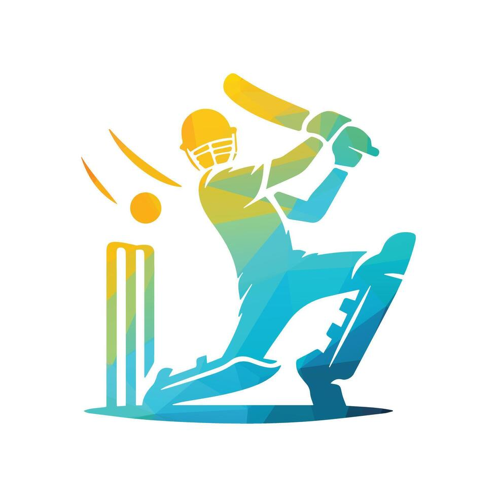

Information of cricket

-
Cricket :-
-
-
Cricket is a bat-and-ball game that is played between two teams of eleven players on a field, at the centre of which is a 22-yard (20-metre; 66-foot) pitch with a wicket at each end,
each comprising two bails balanced on three stumps.
-
Two players from the batting team (the striker and nonstriker) stand in front of either wicket holding bats, with one player from the fielding team (the bowler) bowling the ball towards the striker's wicket from the opposite end of the pitch.
-
The striker's goal is to hit the bowled ball with the bat and then switch places with the nonstriker, with the batting team scoring one run for each exchange. Runs are also scored when the ball reaches or crosses the boundary of the field or when the ball is bowled illegally.